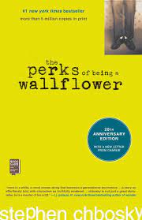

The Perks of Being a Wallflower
Author: Stephen Chbosky
Excerpt below
I just need to know that someone out there listens and understands and doesn't try to sleep with people even if they could have.
I need to know that these people exists.
I think you of all people would understand that because I think you of all people are alive and appreciate what that means.
At least I hope you do because other people look to you for strength and friendship and it's that simple. At least thats what I've heard.

So, ths is my life. And I want you to know that I am both happy and sad and I'm still trying to figure out how that could be.
I try to think of my family as a reason for me being this way, especialy after my friend Michael stopped going to school
one day last spring and we heard Mr. Vaughn's voice on the loudspeaker. "Boy's and girls, I regret to inform you that one of
our students has passed on. We will hold a memorial service for Michael Dobson during assembly this Friday."
I don't know how news travels around school and why it is very often right. Maybe it was in the lunchroom. Its hard to remember.
But Dave with the awkward glasses told us that Michael killed himeself. His mom played bridge with one of Michaels neighbors and they
heard the gunshot.
I don't really remember much of what happened after that except my older brother came to Mr. Vaughn's office in my middle school
and told me to stop crying. Then, he put his arm on my shoulder and told me to get it out of my system before Dad came home.
We then went to eat french fries at McDonald's and he taught me how to play pinball. He even made a joke that because of me he got
to skip an afternoon of school and asked me if I wanted to help him work on his Camaro. I guess I was pretty messy because he never
let me work on his Camaro before.
| Language | English |
| Genre | Yound Adult |
| Publisher | Pocket Books |
| Publication date | 1 Frebruary 1999 |
| Pages | 256 |
| ISBN | 0-671-02734-4 |
Find more info about the The Perks of Being a Wallflower